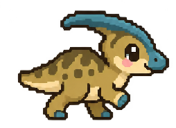
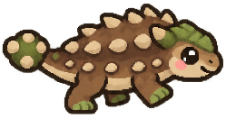
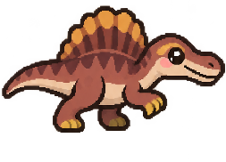
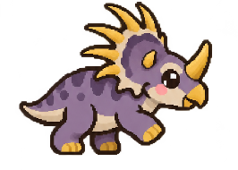
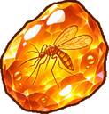
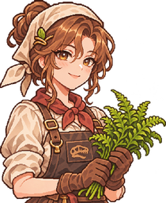
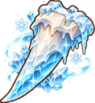

부화와 돌보기
키보드와 마우스를 쓰는 만큼 알이 자라요. 부화한 공룡은 바탕화면 아래에서 뛰놀고, 서로 놀다가 단짝이 되기도 해요.
오늘도 키보드를 두드리다 보면, 작은 알이 깨어나요.
쥐라기와 백악기에서 온 공룡 친구를 만나 보세요.
Windows 10 · 11 · 설치 파일 약 65 MB




알을 깨우고, 캠프에서 연구하고, 공룡들과 새로운 대륙을 탐험해요.

키보드와 마우스를 쓰는 만큼 알이 자라요. 부화한 공룡은 바탕화면 아래에서 뛰놀고, 서로 놀다가 단짝이 되기도 해요.

사육사와 탐험대 동료를 만나 둥지와 호박을 연구해요. DNA를 조합하고, 표본 기록부와 보관함을 채워 보세요.
공룡 5마리로 탐험팀을 꾸려 지층을 내려가고, 대륙마다 다른 야생 공룡과 전투를 벌여요.

바탕화면의 공룡 모두가 출전해요. 보스마다 다른 패턴을 공략하고 희귀 장신구를 모아 보세요.
Windows에서 설치하면 바탕화면 아래쪽에 알이 나타나요.
Dinori_Beta_Setup.exe를 내려받아요.
다운로드한 설치 파일을 더블클릭해요.
설치 창에서 ‘다음’, ‘설치’를 눌러요.
전체 화면 게임이나 영상을 볼 때는 공룡이 자동으로 숨어요.
게임은 누른 횟수만 세고 어떤 키를 눌렀는지는 기록하지 않아요. 자세한 내용은 개인정보 처리방침에서 확인할 수 있어요.
게임을 다시 켤 때 새 버전이 있으면 자동으로 업데이트돼요. 켜 둔 동안 새 버전이 나오면 알림 영역(트레이) 아이콘 메뉴의 ‘★ 업데이트 설치’나 연구 캠프 위쪽의 업데이트 버튼을 누르세요. 키우던 공룡은 그대로 남아요.
Windows 시작 메뉴에서 ‘다이노리 지우기’를 찾아 실행하세요. 삭제할 때 저장 데이터도 지울지 선택할 수 있어요.